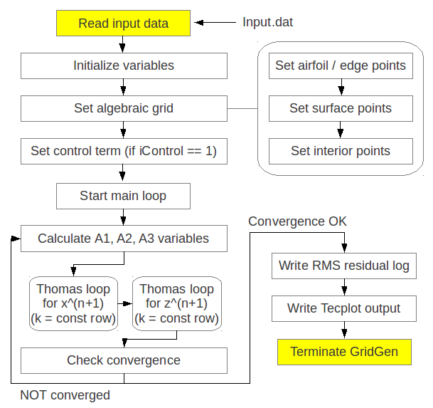

The present project is to make a grid-generator for 3-D computational domain around a modified NACA 00xx series airfoil in a channel. The assigned project is inherently aimed at 2-D grid. However, the currently built GridGen code has a capability of 3-D grid generation.
The source code contains two directories, ‘io’, and ‘main’, for input/output related sources and grid-setup related sources, respectively. ‘CMakeLists.txt’ file is also included for cmake compiling.
$ cd GridGen/CODEdev/src/
$ ls
$ CMakeLists.txt io main
The io folder has io.F90 file which contains ReadGridInput() and WriteTecPlot() subroutines. It also includes input directory which contains default input.dat file.
The main folder is only used for containing grid-setup related source files. The main routine is run by main.F90 which calls important subroutines from main folder itself and io folder when needed. All the fortran source files main folder contains are listed below:
> GridSetup.F90
> GridTransform.F90
> GridTransformSetup.F90
> main.F90
> Parameters.F90
> SimulationSetup.F90
> SimulationVars.F90
The GridGen code is made for creating 3-D computational domain with pre-described points value along the 2D airfoil geometry. The schematic below shows the flow chart of how the GridGen code runs.
The source code shown below is main.F90 and it calls skeletal subroutines for generating grid structure. The main features of the main code is to (1) read input file, (2) make initialized variable arrays, (3) set initial algebraic grid points, (4) create elliptic grid points, and (5) finally write output files:
PROGRAM main
USE SimulationSetup_m, ONLY: InitializeCommunication
USE GridSetup_m, ONLY: InitializeGrid
USE GridTransform_m, ONLY: GridTransform
USE io_m, ONLY: WriteTecPlot, filenameLength
USE Parameters_m, ONLY: wp
IMPLICIT NONE
CHARACTER(LEN=filenameLength) :: outputfile = 'output.tec'
CALL InitializeCommunication
! Make initial condition for grid point alignment
! Using Algebraic method
CALL InitializeGrid
! Use Elliptic grid points
CALL GridTransform
CALL WriteTecPlot(outputfile,'"I","J","K","Jacobian"')
END PROGRAM main
The code starts to run by reading the important input parameters defined in input.dat file. The input data file first contains the number of i, j, k directional grid points. Then the code reads airfoil geometry data from this input file, which provides the bottom edge points of the domain. The input file also contains four vertex points in \((x,y,z)\) coordinates. Thus those points forms a 2-dimensional surface, which is supposed to be created in this project. Next, the code clones these grid points and locates them away from this surface in \(j\)-direction, resulting in 3-dimensional computational domain. Based on these boundary grid points, the code runs with Algebratic grid generating subroutine and gives initial conditions for elliptic solution for grid transformation.
The main.F90 file first refers to InitializeGrid subroutine defined in GridSetup.F90 file. The main function of this routine is to call again multiple subroutines defined in same file. The subroutine definition shown below summarizes the how the code runs for the grid initialization:
!-----------------------------------------------------------------------------!
SUBROUTINE InitializeGrid()
!-----------------------------------------------------------------------------!
USE io_m, ONLY: ReadGridInput
USE SimulationVars_m, ONLY: imax, jmax, kmax,&
xblkV, cy
IMPLICIT NONE
! Create Bottom Edge coordinate values
CALL ReadGridInput
CALL InitializeGridArrays
CALL CreateBottomEdge
CALL SetEdgePnts
CALL GridPntsAlgbra
CALL GenerateInteriorPoints
END SUBROUTINE
Once initial algebraic grid points are created, the code is ready to make elliptic grid points with some control terms in terms of \(Pi\) and \(Psi\). GridTransform.F90 file contains a subroutine named by GridTransform as shown below:
!-----------------------------------------------------------------------------!
SUBROUTINE GridTransform()
!-----------------------------------------------------------------------------!
IMPLICIT NONE
INTEGER :: n
CALL InitializeArrays
IF ( iControl == 1) CALL CalculatePiPsi
DO n = 1, nmax
CALL CalculateA123
CALL ThomasLoop
CALL WriteRMSlog(n,RMSlogfile)
IF (RMSres <= RMScrit) EXIT
ENDDO
CALL CopyFrontTOBack
CALL GenerateInteriorPoints
CALL CalculateGridJacobian
END SUBROUTINE GridTransform
Before going into the main loop for solving poisson equations, the code calculate control terms with \(Pi\) and \(Psi\). Even though the assigned project made an assumption of linear interpolated distribution of \(Pi\) and \(Psi\) at interior points, the GridGen code is designed to allow \(Pi\) and \(Psi\) be weighted in \(j\) and \(i\) directions, respectively. This effect is made by the grid stretching formula. This will be revisited for discussion on Grid 5.
Here, main DO-loop routine goes with setup of coefficients of governing equations and Thomas loop. The Thomas loop operates with line Gauss-Siedel method for resolving unknown variables, \(x\) and \(y\), with tri-diagonal matrix of coefficients of finite difference approximation equation in a \(k\) = constant line. Note that the GridGen code transforms the grid points with elliptic solution only in front surface, then clones the grid points to the back surface and finally creates interior points. The front surface is made up of \(i\) and \(k\) coordinates.
{kind=link}